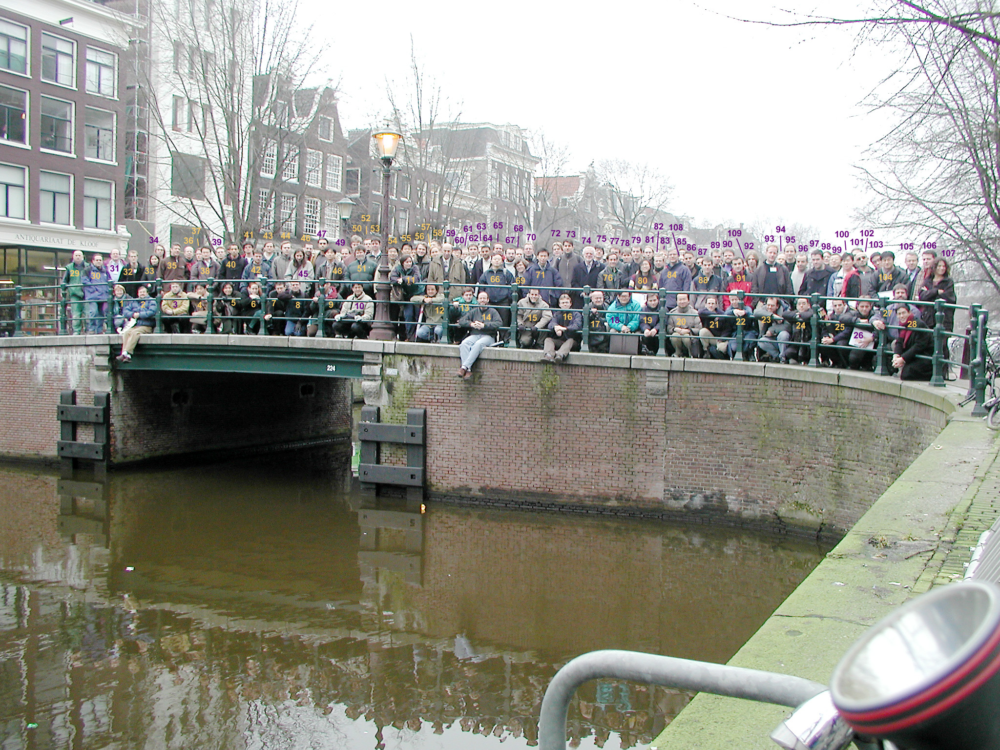

| 1 | Viv Kendon | 29 | 56 | Marats Golovkins | 84 | Richard Jozsa | |
| 2 | Paul Vitányi | 30 | Jordi Delgado | 57 | Julia Kempe | 85 | Ronald de Wolf |
| 3 | Gilles Van Assche | 31 | Charles Bennett | 58 | Maksim Kravtsev | 86 | John Watrous |
| 4 | Fumiaki Morikoshi | 32 | Andrew Childs | 59 | Rusins Freivalds | 87 | |
| 5 | Mio Murao | 33 | Sophie Laplante | 60 | Keiji Matsumoto | 88 | Felix Bussières |
| 6 | Hilary Carteret | 34 | Hartmut Klauck | 61 | Paul Dumais | 89 | Phillip Kaye |
| 7 | Dimitris Dovinos | 35 | Edward Farhi | 62 | Arnolds Kikusts | 90 | Stephen Fenner |
| 8 | David DiVincenzo | 36 | Erich Novak | 63 | Peter Gacs | 91 | Frederic Chazal |
| 9 | Gil Harel | 37 | Andris Ambainis | 64 | Luke Rallan | 92 | Lawrence Ioannou |
| 10 | Masao Osaki | 38 | Shintaro Nomura | 65 | Frank Verstraete | 93 | Wolf von Klitzing |
| 11 | Barbara Terhal | 39 | Thamas Pedersen | 66 | Yu Shi | 94 | Robert Spreeuw |
| 12 | Ernesto Galvão | 40 | Sofyan Iblisdir | 67 | Jakub Màcha | 95 | Jan Neerbek |
| 13 | Jan Bouda | 41 | John Calsamiglia | 68 | Koenraad Audenaert | 96 | |
| 14 | David Gunter | 42 | Iordanis Kerenidis | 69 | Howard Barnum | 97 | Kai Dieckmann |
| 15 | Dan Kenigsberg | 43 | Sean Hallgren | 70 | Leen Torenvliet | 98 | A. Méthot |
| 16 | Thomas Lausten | 44 | Reimo Palm | 71 | Luming Duan | 99 | Dong Pyo Chi |
| 17 | Peter Bro Miltersen | 45 | Daniel Nitzpon | 72 | Mart de Graaf | 100 | Jinsoo Kim |
| 18 | Keath Chen | 46 | Peter Høyer | 73 | Guifré Vidal | 101 | Robert Zeier |
| 19 | Simone Severini | 47 | Rashindra Manniesing | 74 | Philippe Jorrand | 102 | Paolo Zanardi |
| 20 | Hoi Kwong Lo | 48 | Akihiro Yamamura | 75 | Richard Cleve | 103 | Jeyhoon Lee |
| 21 | Stéphane Beauregard | 49 | Adrian Kent | 76 | Harold Ollivier | 104 | Soojoon Lee |
| 22 | Murielle St-Jean | 50 | John Tromp | 77 | Stein De Weirdt | 105 | Jozef Gruska |
| 23 | Tommaso Calarco | 51 | Gerald Gilbert | 78 | Patrick Hayden | 106 | Michele Mosca |
| 24 | José Fernandez | 52 | Hein Röhrig | 79 | David Poulin | 107 | Dorit Aharonov |
| 25 | Massimo Pica Ciamarra | 53 | Paul Cain | 80 | Debby Leung | 108 | Harry Buhrman |
| 26 | Sinisa Karnas | 54 | Kouichi Yamazaki | 81 | Wouter Caarls | 224 | Bridge |
| 27 | Gilles Brassard | 55 | Hirotada Kobayashi | 82 | Jan De Neve | ||
| 28 | Isaac Chuang | 55.5 | Louis Salvail | 83 | Frédéric Magniez |